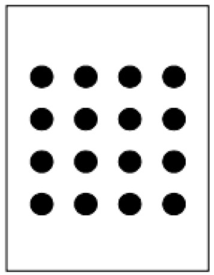
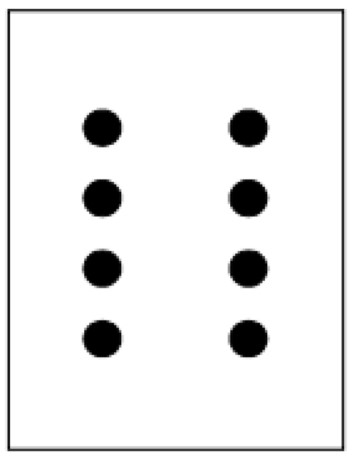
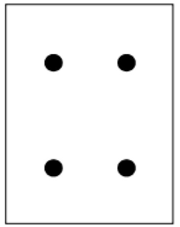
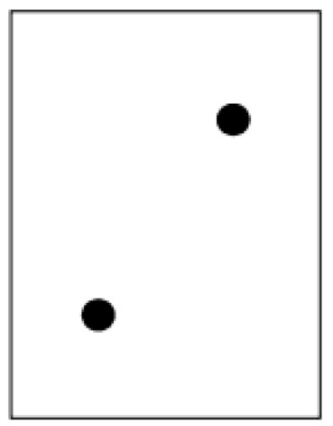
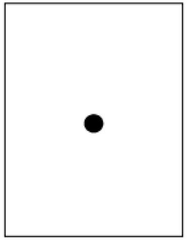

Als een computer alleen 0 en 1 kent, kan een computer dan tot 4 tellen? Het antwoord is "ja". We gaan nu kijken hoe dat zit.
Op de volgende kaarten staan stipjes.
|  |  |  |  |  |
De stipjes geven de waarde van ieder kaart aan. We kunnen deze kaarten omdraaien. De achterkant is zwart zonder stipjes.
We coderen de kaarten zo:
Het decimaal getal 5 weergeven als binair getal gaat zo: 00101 (4+1=5)
| binair | 0 | 0 | 1 | 0 | 1 |
Het decimaal getal 19 weergeven als binair getal gaat zo: 10011 (16+2+1)
| binair | 1 | 0 | 0 | 1 | 1 |
Het grootste getal met 5 bits is 31 (dec) = 11111 (bin). Daarmee kun je de getallen 0 t/m 31 maken.
| binair | 1 | 1 | 1 | 1 | 1 |
Afspraak: we schrijven altijd (dec) of (bin) bij een getal om het stelsel aan te geven.
Zo is 10(dec) gelijk aan tien (dec), en 10(bin) gelijk aan twee (dec).